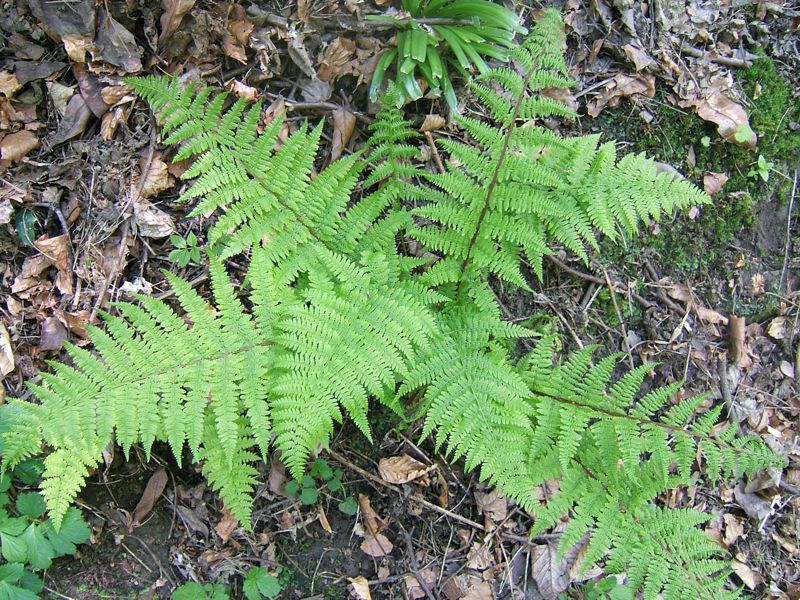

Frauenfarn
Dryopteris dilatata
Der Frauenfarn ist in unseren Wäldern weit verbreitet. Wir finden ihn aber auch im Birkenbruchwald des Riedes. Besondere Kennzeichen: Zartgliedrige, hellgrüne, 2-3´-fach gefiederte Wedel.
Der Frauenfarn ist in unseren Wäldern weit verbreitet. Wir finden ihn aber auch im Birkenbruchwald des Riedes. Besondere Kennzeichen: Zartgliedrige, hellgrüne, 2-3´-fach gefiederte Wedel.